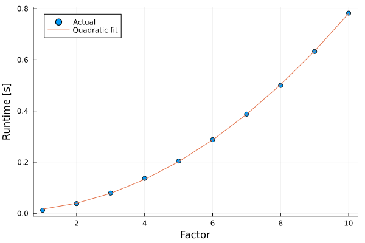
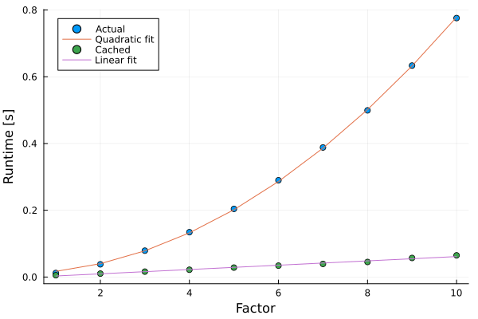

Performance problems with sum-if formulations
This tutorial was generated using Literate.jl. Download the source as a .jl file.
A common performance issue in JuMP arises with filtered summations like sum(x[a] for a in list if condition(a)), which can be surprisingly slow in large models with graph or network structures. This tutorial explains why this happens and shows how to restructure data to avoid the bottleneck.
Learning intentions:
- Identify when
sum(... if condition)generators are the performance bottleneck in a JuMP model - Restructure graph or network data into adjacency lists so that constraint generation loops over only the relevant elements
- Measure and compare model build times to quantify the improvement from the restructured formulation
This tutorial is more advanced than the other "Getting started" tutorials. It's in the "Getting started" section because it is one of the most common causes of performance problems that users experience when they first start using JuMP to write large scale programs. If you are new to JuMP, you may want to briefly skim the tutorial and come back to it once you have written a few JuMP models.
Required packages
This tutorial uses the following packages
using JuMPimport PlotsData
As a motivating example, we consider a network flow problem, like the examples in Network flow problems or The network multi-commodity flow problem.
Here is a function that builds a random graph. The specifics do not matter.
function build_random_graph(num_nodes::Int, num_edges::Int) nodes = 1:num_nodes edges = Pair{Int,Int}[i - 1 => i for i in 2:num_nodes] while length(edges) < num_edges edge = rand(nodes) => rand(nodes) if !(edge in edges) push!(edges, edge) end end function demand(n) if n == 1 return -1 elseif n == num_nodes return 1 else return 0 end end return nodes, edges, demandendnodes, edges, demand = build_random_graph(4, 8)(1:4, [1 => 2, 2 => 3, 3 => 4, 2 => 2, 3 => 3, 1 => 1, 3 => 2, 1 => 4], Main.var"#demand#build_random_graph##0"{Int64}(4))The goal is to decide the flow of a commodity along each edge in edges to satisfy the demand(n) of each node n in nodes.
The mathematical formulation is:
\[\begin{aligned} s.t. && \sum_{(i,n)\in E} x_{i,n} - \sum_{(n,j)\in E} x_{n,j} = d_n && \forall n \in N\\ && x_{e} \ge 0 && \forall e \in E \end{aligned}\]
Naïve model
The first model you might write down is:
model = Model()@variable(model, flows[e in edges] >= 0)@constraint( model, [n in nodes], sum(flows[(i, j)] for (i, j) in edges if j == n) - sum(flows[(i, j)] for (i, j) in edges if i == n) == demand(n));The benefit of this formulation is that it looks very similar to the mathematical formulation of a network flow problem.
The downside to this formulation is subtle. Behind the scenes, the JuMP @constraint macro expands to something like:
model = Model()@variable(model, flows[e in edges] >= 0)for n in nodes flow_in = AffExpr(0.0) for (i, j) in edges if j == n add_to_expression!(flow_in, flows[(i, j)]) end end flow_out = AffExpr(0.0) for (i, j) in edges if i == n add_to_expression!(flow_out, flows[(i, j)]) end end @constraint(model, flow_in - flow_out == demand(n))endThis formulation includes two for-loops, with a loop over every edge (twice) for every node. The big-O notation of the runtime is $O(|nodes| \times |edges|)$. If you have a large number of nodes and a large number of edges, the runtime of this loop can be large.
Let's build a function to benchmark our formulation:
function build_naive_model(nodes, edges, demand) model = Model() @variable(model, flows[e in edges] >= 0) @constraint( model, [n in nodes], sum(flows[(i, j)] for (i, j) in edges if j == n) - sum(flows[(i, j)] for (i, j) in edges if i == n) == demand(n) ) return modelendnodes, edges, demand = build_random_graph(1_000, 2_000)@elapsed build_naive_model(nodes, edges, demand)0.161531374A good way to benchmark is to measure the runtime across a wide range of input sizes. From our big-O analysis, we should expect that doubling the number of nodes and edges results in a 4x increase in the runtime.
run_times = Float64[]factors = 1:10for factor in factors GC.gc() graph = build_random_graph(1_000 * factor, 5_000 * factor) push!(run_times, @elapsed build_naive_model(graph...))endPlots.plot(; xlabel = "Factor", ylabel = "Runtime [s]")Plots.scatter!(factors, run_times; label = "Actual")a, b = hcat(ones(10), factors .^ 2) \ run_timesPlots.plot!(factors, a .+ b * factors .^ 2; label = "Quadratic fit")
As expected, the runtimes demonstrate quadratic scaling: if we double the number of nodes and edges, the runtime increases by a factor of four.
Caching
We can improve our formulation by caching the list of incoming and outgoing nodes for each node n:
out_nodes = Dict(n => Int[] for n in nodes)in_nodes = Dict(n => Int[] for n in nodes)for (i, j) in edges push!(out_nodes[i], j) push!(in_nodes[j], i)endwith the corresponding change to our model:
model = Model()@variable(model, flows[e in edges] >= 0)@constraint( model, [n in nodes], sum(flows[(i, n)] for i in in_nodes[n]) - sum(flows[(n, j)] for j in out_nodes[n]) == demand(n));The benefit of this formulation is that we now loop over out_nodes[n] rather than edges for each node n, and so the runtime is $O(|edges|)$.
Let's build a new function to benchmark our formulation:
function build_cached_model(nodes, edges, demand) out_nodes = Dict(n => Int[] for n in nodes) in_nodes = Dict(n => Int[] for n in nodes) for (i, j) in edges push!(out_nodes[i], j) push!(in_nodes[j], i) end model = Model() @variable(model, flows[e in edges] >= 0) @constraint( model, [n in nodes], sum(flows[(i, n)] for i in in_nodes[n]) - sum(flows[(n, j)] for j in out_nodes[n]) == demand(n) ) return modelendnodes, edges, demand = build_random_graph(1_000, 2_000)@elapsed build_cached_model(nodes, edges, demand)0.209657287Analysis
Now we can analyse the difference in runtime of the two formulations:
run_times_naive = Float64[]run_times_cached = Float64[]factors = 1:10for factor in factors GC.gc() graph = build_random_graph(1_000 * factor, 5_000 * factor) push!(run_times_naive, @elapsed build_naive_model(graph...)) push!(run_times_cached, @elapsed build_cached_model(graph...))endPlots.plot(; xlabel = "Factor", ylabel = "Runtime [s]")Plots.scatter!(factors, run_times_naive; label = "Actual")a, b = hcat(ones(10), factors .^ 2) \ run_times_naivePlots.plot!(factors, a .+ b * factors .^ 2; label = "Quadratic fit")Plots.scatter!(factors, run_times_cached; label = "Cached")a, b = hcat(ones(10), factors) \ run_times_cachedPlots.plot!(factors, a .+ b * factors; label = "Linear fit")
Even though the cached model needs to build in_nodes and out_nodes, it is asymptotically faster than the naïve model, scaling linearly with factor rather than quadratically.
Lesson
If you write code with sum-if type conditions, for example, @constraint(model, [a in set], sum(x[b] for b in list if condition(a, b)), you can improve the performance by caching the elements for which condition(a, b) is true.
Finally, you should understand that this behavior is not specific to JuMP, and that it applies more generally to all computer programs you might write. (Python programs that use Pyomo or gurobipy would similarly benefit from this caching approach.)
Understanding big-O notation and algorithmic complexity is a useful debugging skill to have, regardless of the type of program that you are writing.